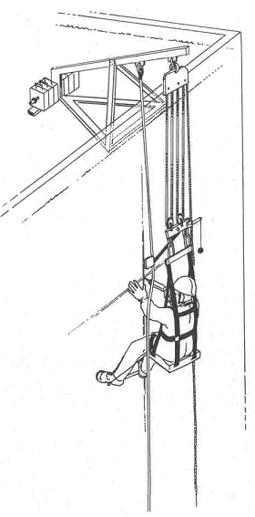
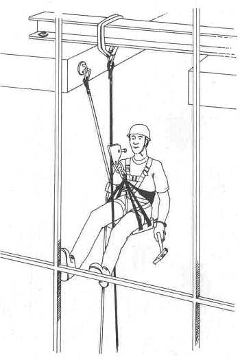

4 |
Systemaufbau |
|
| Handbetriebene Arbeitssitze bestehen aus Tragsystem und Sicherungssystem, wobei zwei Bauarten unterschieden werden: | ||
| - | Bauart A, Beispiel siehe Bild 1 und Bild 2. | |
| Das Auf-und Abseilgerät befindet sich oberhalb vom Höhenarbeiter. Der Arbeitssitz ist am Tragsystem aufgehängt und durch ein Sicherungssystem gegen Absturz gesichert. Der Höhenarbeiter wird durch eine Haltevorrichtung, z. B. Haltegurt, auf dem Arbeitssitz gehalten. Die Bauart A ist gleichermaßen für das Aufseilen (Einstieg unten) und für das Abseilen (Einstieg oben) vorgesehen. | ||
| - | Bauart B, Beispiel siehe Bild 3 und Bild 4. | |
| Das Auf- und Abseilgerät befindet sich in Brusthöhe vor dem Höhenarbeiter. Der Arbeitssitz ist am Tragsystem aufgehängt. Zum Schutz vor Absturz beim Versagen des Tragsystems ist der Höhenarbeiter durch das Sicherungssystem mit einem Auffanggurt gesichert. Die Bauart B ist im Allgemeinen für das Abseilen (Einstieg oben) vorgesehen, kann jedoch mit entsprechender Zusatzausrüstung auch für das Aufseilen benutzt werden. | ||

Bild 1: Handbetriebener Arbeitssitz Bauart A: Auf- und Abseilgerät mittig oberhalb vom Kopf des Höhenarbeiters

Bild 3: Handbetriebener Arbeitssitz Bauart B: Abseilgerät in Brusthöhe mittig vor dem Höhenarbeiter